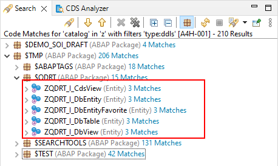
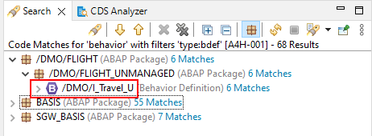

Adds option to continue
a search query that was cancelled or interrupted
Changes
Search Matches in object type Data Definition are
now grouped under the contained Entity with its contained
camel-case name.

Entity names instead of upper-case DDL
names
Behavior definitions are displayed with the name of the
corresponding root CDS entity

Root entity names intead of upper-case BDEF
names